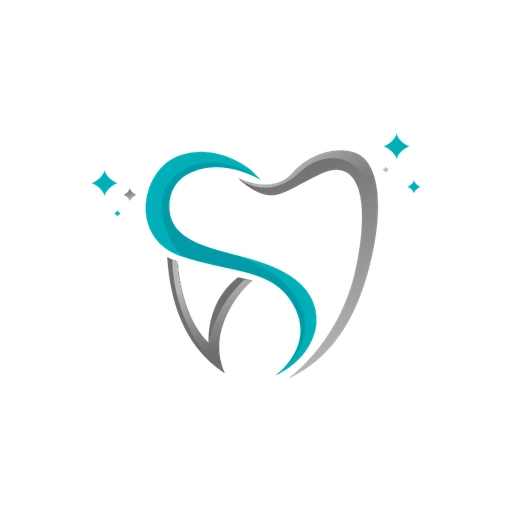
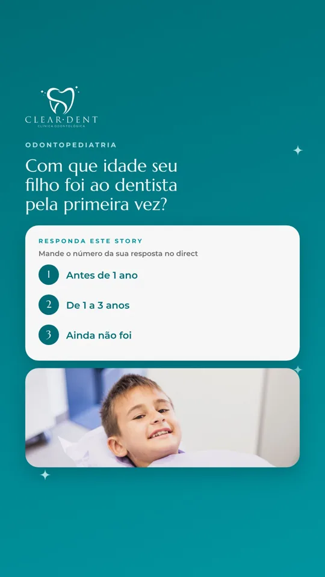
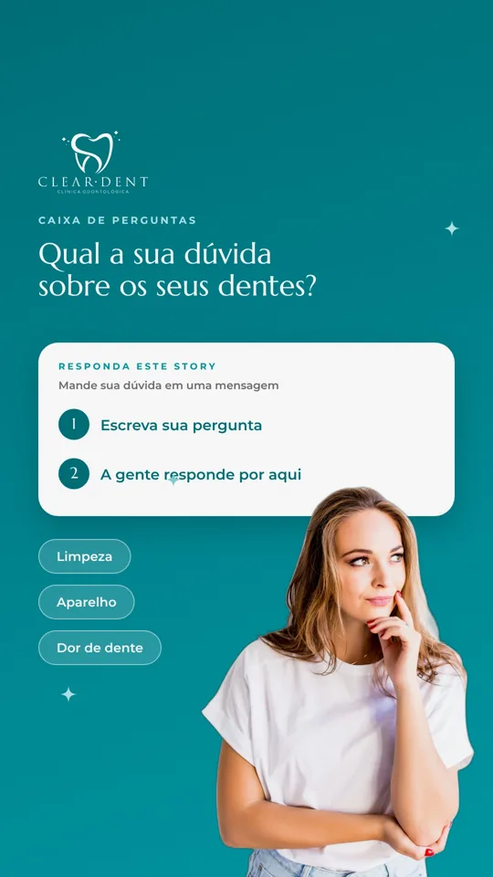
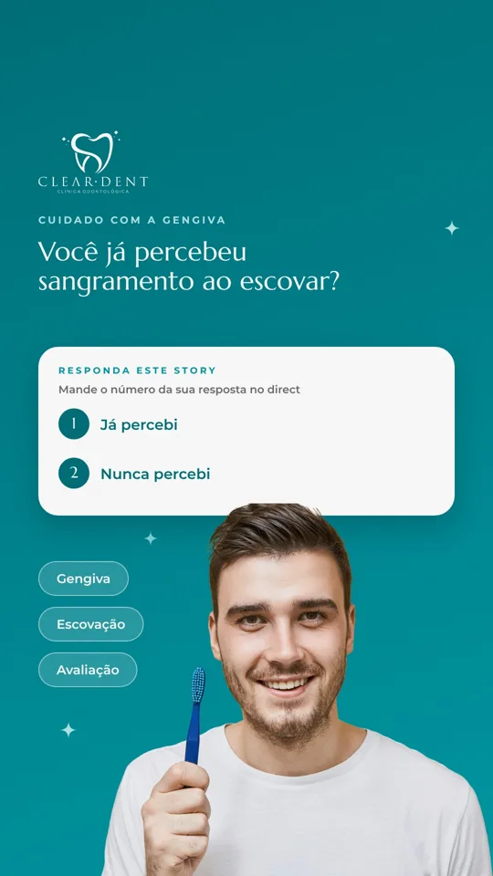
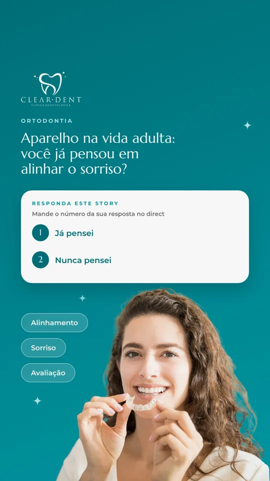
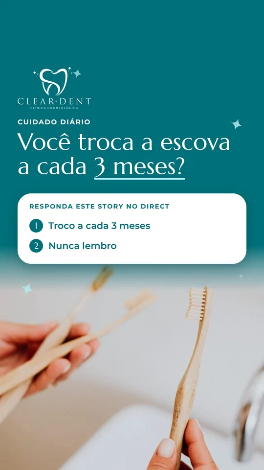

Prévia para aprovação · Clear Dent. Os posts aparecem na ordem em que serão publicados. Toque em um post para ver como ele fica no Instagram e use os botões para aprovar ou pedir ajuste.
9:41
clinica_clear_dent
Nota...

92Publicações
1.876Seguidores
93Seguindo
CLEAR DENT | Dentista em NilópolisDentista e consultório odontológico🦷 Clínica Geral • Ortodontia • Odontopediatria
✨ Harmonização e Clareamento
👶 Cuidado acolhedor com crianças
👇 Marque sua consulta conoscoPraça Orlando Hungria, 16 - Sala 601, Nilópolis 26520340 wa.me/5521982704059
SeguirMensagemContato

Qui 22/10

Sáb 24/10

Ter 27/10
Qui 29/10

Sáb 31/10

Ter 03/11
Clínico Geral
Infantil
Ortodontia
Agendar
clinica_clear_dentPublicações
clinica_clear_dent21 de outubro
clinica_clear_dent Seu filho tem medo do dentista? 🦷😟
Isso é mais comum do que parece, e dá para ajudar em casa 💙
✅ Converse com calma e fale do dentista de forma positiva 🗣️
✅ Nunca use o dentista como ameaça 🚫
✅ Brinque de dentista antes da consulta 🧸
✅ Conte à equipe como a criança se sente 👂
Na Clear Dent, cada criança tem o seu tempo, com acolhimento e paciência 🤗✨
💬 Salve este Reel e compartilhe com outro pai ou mãe 🔖
📲 Quer marcar a consulta do seu filho? Toque no link da bio e fale com a gente no WhatsApp.
📍 Clear Dent · Praça Orlando Hungria, 16, Sala 601, Nilópolis
#odontopediatria #dentistainfantil #medodedentista #saudebucalinfantil #nilopolis #cleardent
clinica_clear_dent Aparelho: o que é mito e o que é verdade? 😁🦷
Deslize e confira 👉
❌ “Aparelho é só para adolescente.” A avaliação ortodôntica pode ser feita em várias idades 👧🧑👩.
❌ “Quem usa aparelho não consegue cuidar da higiene.” Exige cuidado extra, mas é possível, com escova e fio específicos 🪥.
❌ “Aparelho dói o tempo todo.” Um desconforto leve pode aparecer nos primeiros dias e costuma diminuir 😌.
✨ Cada sorriso é um caso: só a avaliação com o ortodontista define o melhor caminho e o tempo do tratamento 🩺.
💬 Qual dessas você já tinha ouvido? Conta aqui nos comentários 👇
📲 Quer saber se o aparelho é para você ou para seu filho? Marque sua consulta conosco pelo link da bio.
📍 Clear Dent · Praça Orlando Hungria, 16, Sala 601, Nilópolis
#ortodontia #aparelhoortodontico #mitoseverdades #sorriso #nilopolis #cleardent
clinica_clear_dent Fio dental: o passo que muita gente esquece 🦷🧵
Escova e fio dental fazem parte da rotina de cuidado com o seu sorriso 😁
🪥 A escova limpa as superfícies
🧵 O fio ajuda a limpar entre os dentes, onde a escova nem sempre alcança
Não sabe como usar o fio direito? Pergunte na sua próxima consulta, a gente mostra com calma 🤗
💬 E você, já usa o fio dental todos os dias? Conta pra gente aqui nos comentários 👇
📲 Marque sua consulta conosco pelo link da bio.
📍 Clear Dent · Praça Orlando Hungria, 16, Sala 601, Nilópolis
#fiodental #saudebucal #higienebucal #cuidadodiario #nilopolis #cleardent
clinica_clear_dent Cada criança tem o seu tempo 🤍🦷
Na Clear Dent, a primeira consulta é um primeiro passo, e ele pode ser dado no ritmo de cada família 💙
✅ Conhecer o espaço sem pressa 🏥
✅ Atendimento a crianças com necessidades especiais, com paciência e tempo de adaptação 🤗
✅ Cuidado no ritmo de cada criança e de cada família 🌱
💬 Conhece uma família que precisa saber disso? Compartilhe este Reel 🔖
📲 Marque sua consulta conosco pelo link da bio e conte pra gente como é o seu filho.
📍 Clear Dent · Praça Orlando Hungria, 16, Sala 601, Nilópolis
#odontopediatria #dentistainfantil #necessidadesespeciais #acolhimento #saudebucalinfantil #nilopolis #cleardent
clinica_clear_dent Escovar os dentes pode virar brincadeira 🦷✨
Três ideias simples para deixar a hora da escova mais leve para o seu filho 💙
1️⃣ Deixe seu filho escolher a escova 🪥 Cor, personagem ou tamanho: assim ele se sente parte da escolha.
2️⃣ Escovem juntos 👨👧 A criança aprende vendo você.
3️⃣ Cantem uma música enquanto escovam 🎶 A hora de escovar passa mais leve.
💬 Qual música vocês cantam aí em casa? Conta aqui nos comentários 👇
📲 Quer cuidar do sorriso do seu filho? Marque sua consulta conosco pelo link da bio ou pelo WhatsApp (21) 98270-4059.
📍 Clear Dent · Praça Orlando Hungria, 16, Sala 601, Nilópolis
#odontopediatria #dentistainfantil #escovacaoinfantil #saudebucalinfantil #nilopolis #cleardent
clinica_clear_dent Cuidar do sorriso da família começa com uma consulta tranquila 🦷💙
Na Clear Dent, em Nilópolis, você encontra três especialidades no mesmo lugar. Assista e conheça cada uma 👉
👶 Odontopediatria: a primeira consulta de uma criança com calma e acolhimento, respeitando o tempo de adaptação de cada uma. Também atendemos crianças com necessidades especiais, com paciência e cuidado.
😁 Ortodontia: avaliação para crianças, adolescentes e adultos. Só o ortodontista define se há indicação de aparelho e qual é o melhor caminho.
🪥 Clínico geral: limpeza, prevenção e check-up para manter a saúde da boca em dia.
💬 Chame no WhatsApp, conte o que você procura e agende sua avaliação.
📲 Marque sua consulta conosco pelo link da bio.
📍 Clear Dent · Praça Orlando Hungria, 16, Sala 601, Nilópolis
📱 WhatsApp: (21) 98270-4059
#odontopediatria #ortodontia #clinicogeral #dentistanilopolis #nilopolis #cleardent
clinica_clear_dent Cuidar cedo faz diferença 🦷✨
Assista e veja três dúvidas que a gente mais escuta 👉
👶 Quando levar uma criança ao dentista pela primeira vez? Na primeira consulta, o foco é conhecer o espaço e criar confiança, sem pressa. O dentista orienta o momento ideal para cada criança.
😁 Nunca é tarde para a ortodontia. Adultos também podem fazer a avaliação ortodôntica. O ortodontista indica se há necessidade de aparelho e como seria o tratamento.
🪥 Quando foi a sua última limpeza? Limpeza e check-up periódicos ajudam a prevenir problemas, e o dentista indica a frequência ideal para cada pessoa.
Na Clear Dent, em Nilópolis, atendemos crianças, adolescentes e adultos.
💬 Converse com a gente no WhatsApp e tire suas dúvidas.
📲 Marque sua consulta conosco pelo link da bio.
📍 Clear Dent · Praça Orlando Hungria, 16, Sala 601, Nilópolis
📱 WhatsApp: (21) 98270-4059
#odontopediatria #ortodontia #clinicogeral #dentistanilopolis #nilopolis #cleardent
clinica_clear_dent Procurando dentista em Nilópolis? 🦷📍
A Clear Dent atende toda a família, com três frentes de cuidado. Assista 👉
👶 Dentista infantil: odontopediatria com acolhimento, para a primeira consulta e para o acompanhamento da criança.
😁 Aparelho para adultos: avaliação ortodôntica com o ortodontista, para saber se o aparelho é indicado para você.
🪥 Clínico geral: limpeza, prevenção e consultas de rotina.
💬 Fale com a gente no WhatsApp, tire suas dúvidas e marque sua avaliação.
📲 Marque sua consulta conosco pelo link da bio.
📍 Clear Dent · Praça Orlando Hungria, 16, Sala 601, Nilópolis
📱 WhatsApp: (21) 98270-4059
#odontopediatria #ortodontia #clinicogeral #dentistanilopolis #nilopolis #cleardent
clinica_clear_dent Cuidar do sorriso da família começa com uma consulta tranquila 🦷💙
Na Clear Dent, em Nilópolis, você encontra três especialidades no mesmo lugar. Deslize e conheça cada uma 👉
👶 Odontopediatria: a primeira consulta de uma criança com calma e acolhimento, respeitando o tempo de adaptação de cada uma. Também atendemos crianças com necessidades especiais, com paciência e cuidado.
😁 Ortodontia: avaliação para crianças, adolescentes e adultos. Só o ortodontista define se há indicação de aparelho e qual é o melhor caminho.
🪥 Clínico geral: limpeza, prevenção e check-up para manter a saúde da boca em dia.
💬 Chame no WhatsApp, conte o que você procura e agende sua avaliação.
📲 Marque sua consulta conosco pelo link da bio.
📍 Clear Dent · Praça Orlando Hungria, 16, Sala 601, Nilópolis
📱 WhatsApp: (21) 98270-4059
#odontopediatria #ortodontia #clinicogeral #dentistanilopolis #nilopolis #cleardent
Carrossel · Anúncio A · Título: “Dentista para toda a família em Nilópolis” · Botão: Enviar mensagem
clinica_clear_dent Cuidar cedo faz diferença 🦷✨
Deslize e veja três dúvidas que a gente mais escuta 👉
👶 Quando levar uma criança ao dentista pela primeira vez? Na primeira consulta, o foco é conhecer o espaço e criar confiança, sem pressa. O dentista orienta o momento ideal para cada criança.
😁 Nunca é tarde para a ortodontia. Adultos também podem fazer a avaliação ortodôntica. O ortodontista indica se há necessidade de aparelho e como seria o tratamento.
🪥 Quando foi a sua última limpeza? Limpeza e check-up periódicos ajudam a prevenir problemas, e o dentista indica a frequência ideal para cada pessoa.
Na Clear Dent, em Nilópolis, atendemos crianças, adolescentes e adultos.
💬 Converse com a gente no WhatsApp e tire suas dúvidas.
📲 Marque sua consulta conosco pelo link da bio.
📍 Clear Dent · Praça Orlando Hungria, 16, Sala 601, Nilópolis
📱 WhatsApp: (21) 98270-4059
#odontopediatria #ortodontia #clinicogeral #dentistanilopolis #nilopolis #cleardent
Carrossel · Anúncio B · Título: “Agende sua avaliação no WhatsApp” · Botão: Enviar mensagem
clinica_clear_dent Procurando dentista em Nilópolis? 🦷📍
A Clear Dent atende toda a família, com três frentes de cuidado. Deslize 👉
👶 Dentista infantil: odontopediatria com acolhimento, para a primeira consulta e para o acompanhamento da criança.
😁 Aparelho para adultos: avaliação ortodôntica com o ortodontista, para saber se o aparelho é indicado para você.
🪥 Clínico geral: limpeza, prevenção e consultas de rotina.
💬 Fale com a gente no WhatsApp, tire suas dúvidas e marque sua avaliação.
📲 Marque sua consulta conosco pelo link da bio.
📍 Clear Dent · Praça Orlando Hungria, 16, Sala 601, Nilópolis
📱 WhatsApp: (21) 98270-4059
#odontopediatria #ortodontia #clinicogeral #dentistanilopolis #nilopolis #cleardent
Carrossel · Anúncio C · Título: “Clear Dent | Dentista em Nilópolis” · Botão: Enviar mensagem
clinica_clear_dent Dia das Bruxas chegou! 🎃🦇 E os dentes das crianças? 🦷
Doce faz parte da festa, e dá para curtir com cuidado 💜
🍽️ Doces junto das refeições, em vez de beliscar o dia todo
🍬 Atenção aos que grudam: balas e caramelos ficam mais tempo nos dentes
🗣️ Combinem a quantidade do dia antes da festa
💧 Água depois dos doces ajuda a enxaguar a boca
🪥 Depois, volte à escovação e ao fio dental da rotina
💬 Qual a fantasia do seu pequeno? Conta aqui nos comentários 👇
📲 Quer cuidar do sorriso do seu filho? Marque sua consulta conosco pelo link da bio.
📍 Clear Dent · Praça Orlando Hungria, 16, Sala 601, Nilópolis
#diadasbruxas #halloween #odontopediatria #dentistainfantil #saudebucalinfantil #nilopolis #cleardent